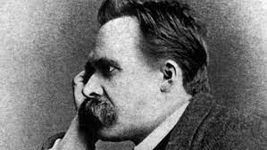

"LOS MAESTROS DE LA SOSPECHA"

RESUMEN
---------MATERIAL DE LECTURA-
NIETZSCHE, FREUD, MARX FOUCAULT MICHEL
LOS MAESTROS DE LA SOSPECHA. TORRALBA FRANCESC
MAESTROS DE LA SOSPECHA CRÍTICOS DE LA FE.FERRAN MANRESA PRESAS Y OTROS
LA HERMENÉUTICA DE LA SOSPECHA. GADAMER HANS-GEORG
APORTES DE LA HERMENÉUTICA DE LA SOSPECHA PARA LA LITERATURA Y LA TEOLOGÍA.BUSTAMANTE CRISTINA E
LA NEUROHERMENÉUTICA DE LA SOSPECHA. UNA APROXIMACIÓN TEÓRICA. GAMBINO RENATA; PULVIRENTI GRAZIA
LA HERMENÉUTICA DE LA RECUPERACIÓN SEGÚN PAUL RICOEUR Y BERNARD LONERGAN. COVARRUBIA SALLAN CRHISTIAN
TANTA DESCONFIANZA, TANTA FILOSOFÍA: EL PENSAMIENTO CRITICO EN NIETZSCHE. CRAGNOLINI MÓNICA B.
Videos
Paul Ricoeur: Los "maestros de la sospecha"
¿Qué entiende Paul Ricoeur por "identidad narrativa"?
Foucault; Nietzsche, Marx Freud
Nietzsche, Freud, Marx - Michel Foucault AUDIOLIBRO COMPLETO
"VOLVER"